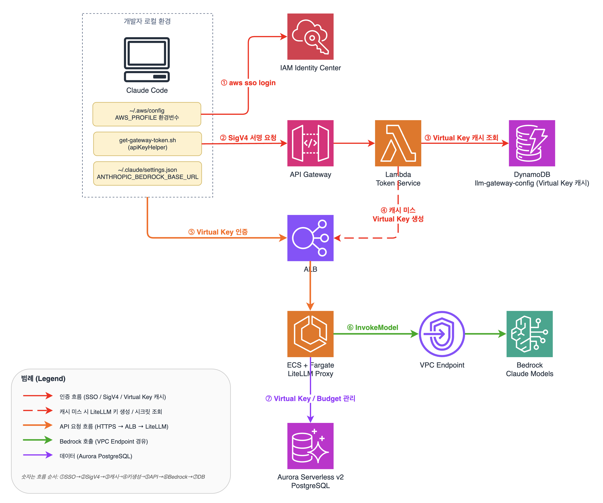

01프로젝트 개요
무엇을 운영했는지
시스템 개요
Claude Code 등 AI 코딩 도구의 모델 호출을 단일 게이트웨이(LiteLLM Proxy)로 모으고, SSO 인증 → 사용자별 Virtual Key → 팀 예산 단위로 사용량을 관리하는 사내 LLM Gateway입니다.
제가 맡은 범위
- 샘플 프로젝트를 기반으로 한 AWS CDK 배포 및 유지보수
- 신규 Claude 모델 출시 시 모델 등록 후 재배포
- 샘플에 없던 Azure OpenAI(GPT) 모델을 직접 추가 연동
- 팀 단위 예산 · 사용자 구성 운영
- 사용량 · 비용 조회 및 월별 집계
구성 요약
AWS CDK v2 (TypeScript) NestedStack 구조 · 단일 루트 배포 LiteLLM Proxy on ECS Fargate IAM Identity Center SSO API Gateway + Lambda Aurora Serverless v2 DynamoDB Amazon Bedrock02아키텍처
AWS 샘플 프로젝트가 제공하는 구성을 기반으로 운영한 아키텍처

1SSO Login — 개발자가
aws sso login으로 IAM Identity Center 인증2SigV4 서명 요청 — apiKeyHelper가 SSO 자격증명으로 Token Service(API Gateway) 호출
3Virtual Key 캐시 조회 — Token Service가 DynamoDB에서 사용자의 Virtual Key 조회
4Virtual Key 생성 — 캐시 미스 시 LiteLLM
/key/generate로 자동 생성5Virtual Key 인증 — Claude Code가 발급된 키로 ALB → LiteLLM Gateway 접근
6Bedrock InvokeModel — LiteLLM이 VPC Endpoint를 통해 Amazon Bedrock 호출
7Virtual Key / Budget 관리 — LiteLLM이 Aurora PostgreSQL에 사용자별 사용량 · 예산 기록
인프라 스택 구성 (CDK NestedStack)
루트 스택 하나를 배포하면 하위 스택이 의존 순서대로 함께 배포됩니다.
Network
VPC(2 AZ · Public / Private / Isolated Subnet · NAT GW 1), Security Group, Bedrock VPC Endpoint, S3 / DynamoDB Gateway Endpoint
Database
Aurora Serverless v2 (PostgreSQL, 0.5 ~ 4 ACU, Isolated Subnet) — LiteLLM의 Key · Team · 사용량 저장
Auth
Token Service (Lambda + API Gateway IAM Auth) — SSO 신원 확인 후 Virtual Key 반환
Gateway
ECS Fargate (2 vCPU · 4 GB) 위의 LiteLLM Proxy, ALB (HTTPS · TLS 1.3)
Monitoring
CloudWatch Dashboard / Alarm, DynamoDB 설정 테이블
03운영 내용
현재 이 시스템을 어떻게 사용하고 관리했는지
| 영역 | 운영 방식 |
|---|---|
| 배포 | SSO 프로필로 cdk deploy 루트 스택 1회 실행 — 하위 스택이 자동으로 함께 배포. 배포 전 cdk diff / synth로 변경 사항 확인 |
| 모델 추가 | 신규 Claude 모델(Opus / Sonnet 신규 버전 등) 출시 시 CDK의 모델 목록에 등록하고 재배포. 변경 이력은 Git으로 관리 |
| 외부 모델 연동 (샘플 대비 추가) | 샘플은 Bedrock Claude만 지원하므로, 사내 Azure API Management(APIM)를 경유하는 Azure OpenAI GPT 모델(GPT-4.1 mini, GPT-5.4 mini)을 LiteLLM에 추가 연동. 동일한 Gateway · Virtual Key · 팀 예산 체계 안에서 Claude와 GPT를 함께 사용하도록 구성. API 키는 Secrets Manager에 보관하고 ECS 환경변수로 주입. 호출 경로는 LiteLLM → NAT Gateway → APIM → Azure OpenAI (위 아키텍처 그림에는 없는 경로) |
| 사용자 · 팀 | IAM Identity Center에 사용자를 등록하면 첫 로그인 시 Virtual Key가 자동 발급. 5개 팀 단위로 사용자를 구성하고 팀 예산으로 관리 |
| 사용량 · 비용 | LiteLLM의 사용량 API를 이용해 사용자 × 모델 단위 사용량을 월별로 집계하고 비용 확인 |
| 접근 통제 | ALB의 허용 IP 기반 Security Group, 비밀값은 Secrets Manager로 관리 |
개발자 측 사용 흐름
export AWS_PROFILE=<sso-profile> aws sso login # 브라우저에서 사내 SSO 로그인 claude # apiKeyHelper가 Token Service 호출 → Virtual Key 자동 사용
04기술 스택
| 카테고리 | 기술 |
|---|---|
| IaC | AWS CDK v2 (TypeScript), CloudFormation NestedStack |
| Gateway | LiteLLM Proxy, ECS Fargate, ALB, ACM |
| 인증 | IAM Identity Center, API Gateway (IAM Auth), Lambda (Python), Secrets Manager |
| 데이터 | Aurora Serverless v2 (PostgreSQL), DynamoDB |
| AI 모델 | Amazon Bedrock (Claude Opus / Sonnet / Haiku), Azure OpenAI via Azure API Management (GPT-4.1 mini, GPT-5.4 mini) |
| 네트워크 · 모니터링 | VPC, NAT Gateway, VPC Endpoint, CloudWatch |
05운영 이력
Git 커밋 이력 기준
2026.04
AWS 샘플 프로젝트 기반으로 사내 계정에 배포, 사용자 온보딩 시작. Azure OpenAI(GPT-4.1 mini) 모델 추가 연동
2026.05
팀 단위 예산 구성으로 운영 방식 정리
2026.06 ~ 07
GPT-5.4 mini 추가, 월별 사용량 · 비용 집계 방식 정리, 신규 모델 추가
2026.08 ~ 10
신규 Claude 모델(Opus / Sonnet 신규 버전) 순차 추가 및 재배포
06도입 효과
- 사용자의 비용 사용 통제 및 가시성을 부여하여 어떤 사용자가 많이 쓰는지를 확인할수 있습니다.
- Litellm 에 속한 기능으로, 특정 문자열들은 답변이 금지되었습니다.
- AI Agent 에서 AI 사용이 필요할때 Key 만 발급 받으면 바로 사용이 가능하고 비용 확인도 가능하다는 장점이 있습니다.